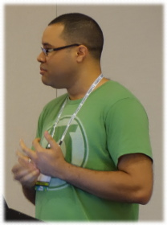

DAX, mmap(), and a "go faster" flag
At the 2016 Linux Storage, Filesystem, and Memory-Management Summit, Dan Williams led a combined storage and filesystem session he jokingly called "mmap() ponies" (referring to the O_PONIES debate from 2009). The discussion was about the "I know what I'm doing" flag for mmap() that would allow user space to manage its dirty cache lines when persistent memory and the DAX direct-access mechanism are being used. The overhead of the kernel tracking those dirty cache lines in the page cache can be avoided, but many saw it as a premature optimization.
The flag in question is actually called MAP_PMEM_AWARE, but it certainly acts like its longer name would imply. Williams acknowledged that it breaks POSIX semantics and noted that Dave Chinner was strongly against it. It is an attempt to "have our cake and eat it too", he said.

Jan Kara called it a "go faster" flag, but claimed that most of the overhead would still be present. The tracking would be needed to avoid races between faults for regular pages and huge pages. So the flag really won't even go that much faster.
Williams said that one of Chinner's complaints was that there was no reason to have a "go faster" flag when we don't know how slow it goes now. But it is roughly ten times faster to simply flush the cache lines from user space, as opposed to calling msync() to flush a 4KB page when data in that range is dirtied. The difference is in the granularity that is being flushed, he said: 64 bytes for a cache line versus 4KB for a page.
As several pointed out, though, pages can be larger than that, including 2MB huge pages or 1GB extra-huge pages. Kara also said that the PPC architecture has 64KB pages, so it is tracking on that granularity. The problem, he said, is that user space believes that flushing the cache lines is enough to ensure data integrity, but it isn't. There is metadata of various sorts that filesystems need to persistently store, which requires an fsync() or similar.
Williams acknowledged that managing the dirty data in user space without calling fsync() will not allow filesystems to do copy-on-write (CoW) or "other fancy stuff" behind the application's back. But Chris Mason pointed out that the filesystem doesn't know when the application is done with the data; the filesystem defines when the read-only phase of its data begins and ends, so without an fsync() it doesn't know when to write its metadata.
Williams suggested that the DAX semantics could be changed so that all faults are synchronous with respect to the metadata. It would be "less surprising" if that were simply a property of DAX, he said. Kara said that he still thinks it is a premature optimization, but that making faults synchronous with metadata updates is probably the right way forward.
The flag may still be useful, Williams said, as it does mean that the application knows that it is bypassing sync operations. But he disagreed with the "premature optimization" characterization. Some data that he received just before the session started showed the 10x performance difference he had mentioned earlier. The problem is that if a customer asks "what happens if I don't call fsync()?", the answer from filesystem developers will be that their data is not guaranteed to be persistent. That is what the flag would allow.
Kara suggested that the dirty data could still be tracked in the kernel, but that information simply wouldn't be used. Williams said that there is "no real cost" to doing that tracking, so that would probably be fine.
Ted Ts'o suggested a flag to msync() just for metadata flushes as an approach. Or perhaps an fmetadatasync() or similar system call, that would simply sync all applicable filesystem metadata for a range—trusting user space to flush its data cache lines correctly. Kara said that it might make it difficult to determine what caused data-loss problems, but Ts'o said that if data is lost, it is an application problem, but if the filesystem is corrupted, that would indicate a filesystem bug.
Kara agreed and thought that fmetadatasync() would both be more future-proof and more in line with what filesystem developers would prefer. It might not perform all that well for small updates, but should be fine for large operations, he said. Ts'o cautioned that it is still early, so kernel developers really do not know how applications will want to use persistent memory. As time goes on, new or different interfaces may be needed.
| Index entries for this article | |
|---|---|
| Kernel | Memory management/Nonvolatile memory |
| Conference | Storage, Filesystem, and Memory-Management Summit/2016 |